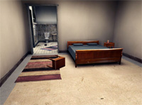

[dorkbot.org] > [dorkbot-sthlm]
home ::: about ::: archives ::: newsletters ::: links ::: contact
DORKBOT #3
august 10, 2005
Erik Pineiro |
|
Is software development carried out with the help of sacrifices and rituals? Wasn't programming meant to be a strictly rational endeavour? What are we taught at a computer science degree? Erik Pineiro has written a PhD thesis on the subject of the beauty of (software) code. At Dorkbot he will present one of the fundamental ideas of his thesis: the role of sacrifice and ritual in computer programming.
|
|
| John Paul Bichard | |
"I would like to talk about my work which mainly covers the relationship between the game space and the ´real'. To date this has included exploring evidence spaces where generic game style scenes are recreated as real crime scenes; an in-game photoshoot of crime scenes in Max Payne 2 and now in my research in a project with the Interactive Institute that sets out to develop games in the everyday environment - you can see more here http://www.hydropia.org/john - as it is a relatively short presentation I will primarily deal with the evidence spaces and the relationship between the game space and the real." |
 |
all materials on this website copyright 2005-2006 majken kramer overgaard and eugen krasiuk and the individual artists/presenters